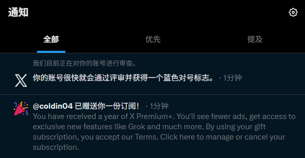
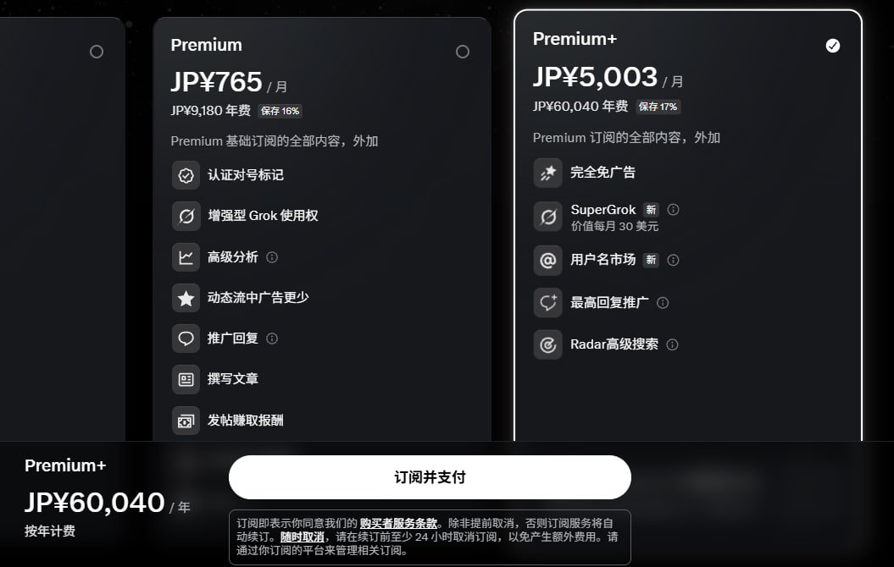
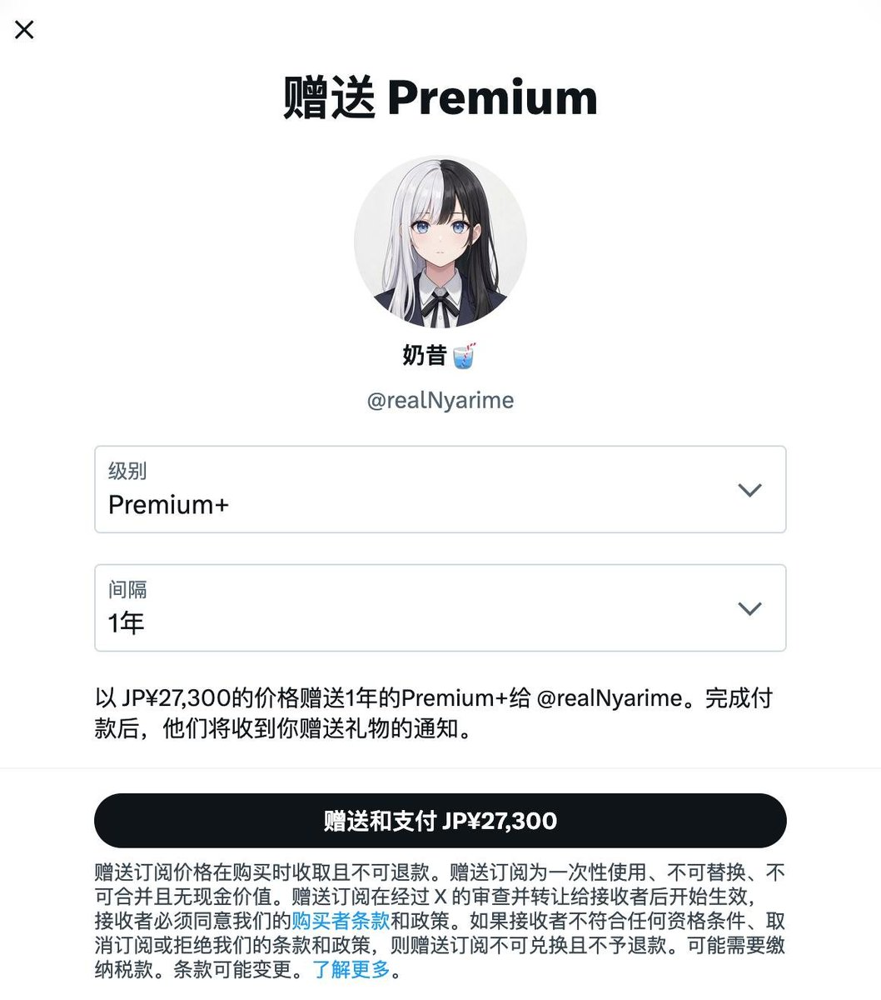
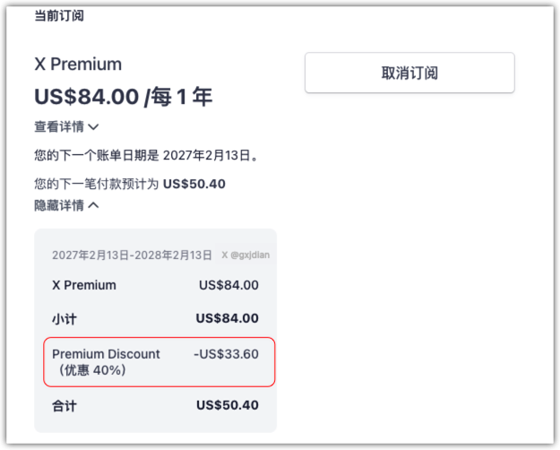

奶昔🥤
@realNyarime
@gxjdian 实话说p+得靠朋友送，直接买贵的多




奶昔🥤
@realNyarime
今早通过Google Play订阅的𝕏 Premium到期了，打算以2倍的价格开Premium+，结果发现直接开1年P+的价格高达60040日元（约391刀），而让好友赠送的1年P+仅需27300日元（约178刀）。
实在没朋友，那就小号开一个月Premium，再赠送给大号就行。问了Premium客服，只需要到期当天及时续上，就不会影响权益。 https://t.co/tylwVHkRVa
纯棉短裤
@gxjdian
经多个账户测试，推特蓝V会员打 4 折、5 折 的道道，
摸清了，搞起来！
- 先把自己的蓝V 会员从月改成续费一年。
- 然后把这一年取消时，就会提示，续费打折。
- 点击，不取消。则下一年度享受这个打折福利。 https://t.co/9vKzZ9uhU2 https://t.co/3HVAHBDroM